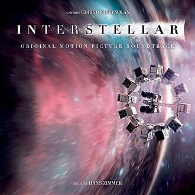
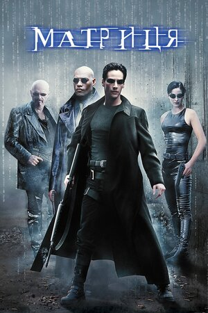
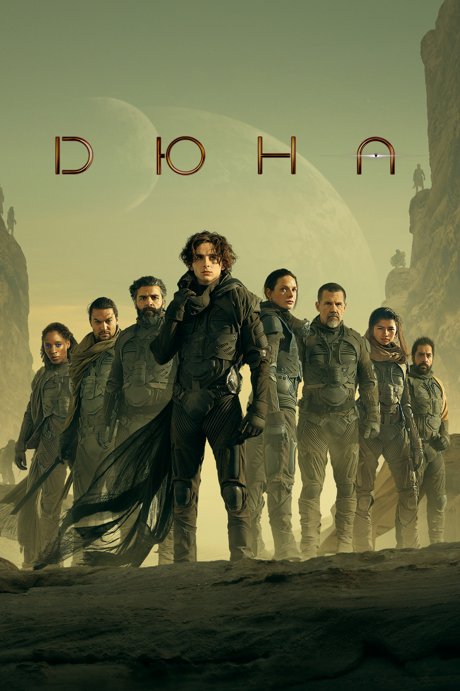
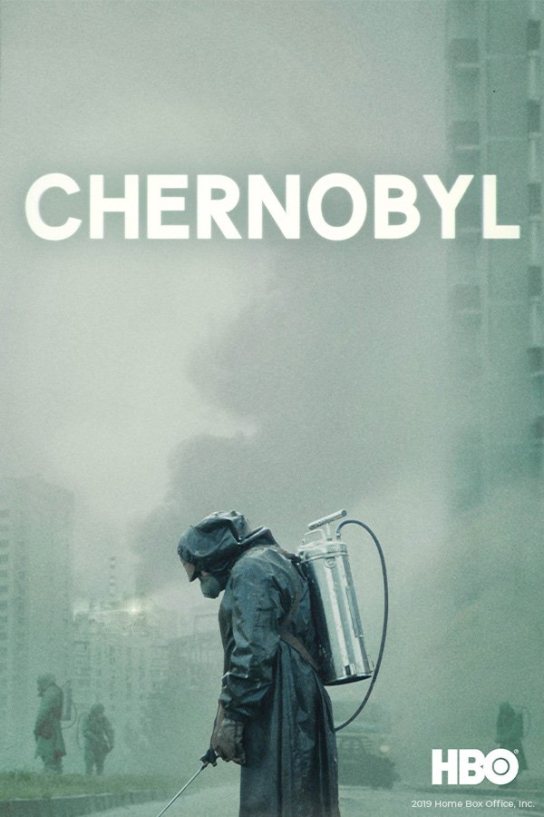
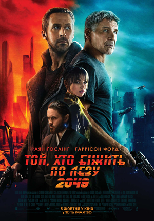
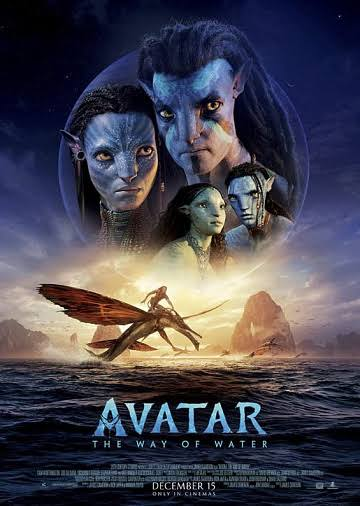

Про мене та цей проєкт
Ця сторінка створена як лабораторна робота для вивчення семантичної розмітки HTML5 без використання CSS. Тематика проєкту — каталог кіно.
Студент факультету ЕлІТ СумДУ. Розробник каталогу фільмів та серіалів.

Ця сторінка створена як лабораторна робота для вивчення семантичної розмітки HTML5 без використання CSS. Тематика проєкту — каталог кіно.

Жанр: Фантастика, Драма
Рік:
Тривалість: 169 хв
Сюжет: Команда дослідників вирушає крізь червоточину в просторі, щоб знайти новий дім для людства.

Жанр: Фантастика, Бойовик
Рік:
Тривалість: 136 хв
Сюжет: Хакер Нео дізнається, що його світ — це віртуальна ілюзія, створена машинами.

Жанр: Фантастика, Пригоди
Рік:
Тривалість: 155 хв
Сюжет: Пол Атрід вирушає на найнебезпечнішу планету у всесвіті, щоб забезпечити майбутнє своєї родини.

Жанр: Драма, Історія
Рік:
Тривалість: 330 хв (5 серій)
Сюжет: Історія аварії на Чорнобильській АЕС та людей, які намагалися мінімізувати її наслідки.

Жанр: Фантастика, Трилер
Рік:
Тривалість: 164 хв
Сюжет: Офіцер поліції розкриває таємницю, яка може занурити залишки суспільства в хаос.

Жанр: Фантастика, Бойовик
Рік:
Тривалість: 162 хв
Сюжет: Морський піхотинець на візку відправляється на Пандору і опиняється між двома світами.